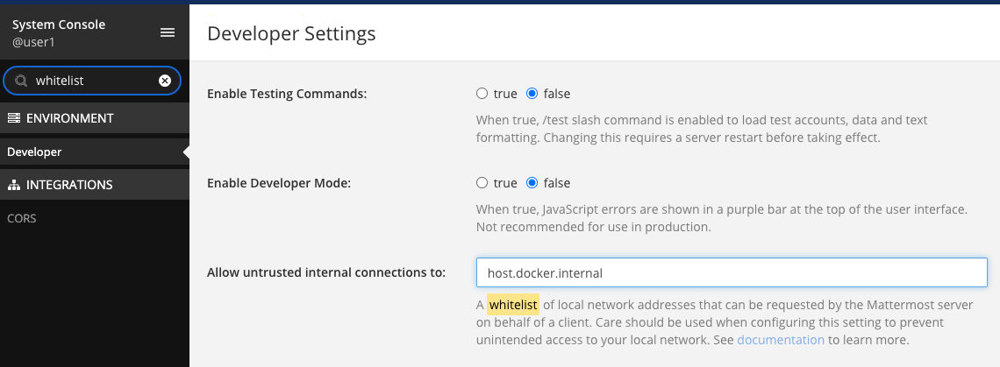

Mattermostのボットを作る
会社内ではMattermostが動いているのですが、他の社内システムと連携したいという要望がこっそり投稿されていて、まあ多少気になっていたのでbotを作ってみました。botの中身についてはともかく、botを動かすところについて一応残しておこうと思います。
Mattermostを動かす
とりあえずはMattermostを動かさないと始まりません。dockerhubにイメージがあるので、適当なイメージを探します。今回は mattermost/mattermost-preview を使いました。
docker run --name mattermost-preview -d --publish 8065:8065 --add-host dockerhost:127.0.0.1 mattermost/mattermost-preview
コンテナが起動したら localhost:8065 にアクセスするとアカウントとチームの作成が始まるのでそれぞれなにかしら入力するだけですぐに利用できます。
コールバックAPIを作る
Mattermostから呼び出されるAPIを動かします。とりあえずGoで書いてみました。リクエストパラメタにhelloをつけて返すだけです。
package main
import (
"fmt"
"net/http"
)
func slash(w http.ResponseWriter, r *http.Request) {
text := r.FormValue("text")
fmt.Fprintf(w, "hello %v", text)
}
func main() {
http.HandleFunc("/slash", slash)
http.ListenAndServe(":8090", nil)
}
VSCodeの REST Client を使って、以下のようにリクエストしました。
POST /slash HTTP/1.0
Host: localhost:8090
Content-Type: application/x-www-form-urlencoded
text=golang
送信したパラメタが正しく表示されました。
HTTP/1.1 200 OK
Date: Sat, 08 Aug 2020 09:42:39 GMT
Content-Length: 12
Content-Type: text/plain; charset=utf-8
Connection: close
hello golang
ここまででAPIはできました。
Mattermostの設定を編集する
開発時の環境にもよりますが、Mattermostから呼び出すAPIをホワイトリストに追加する必要がありました。今回はDockerコンテナの中からホスト上のAPIを呼び出すので、 host.docker.internal を設定します。
System Console を開いたら whitelist で検索して、該当の項目に値を設定します。

Integrationsを追加する
Integrations から Slash Commands を追加します。コマンドトリガは /slash としました。
試す
ためしてみます。
コマンドの引数として渡した値が正しく表示されました。
この後
ここでは Slash Commands の追加を行いました。それとは別に Outgoing Webhooks もあります。概ね似たようなものなのですが、リクエストパラメタの取り扱いやレスポンスの形式について、少し違いもありました。
それについてはMattermostのドキュメントを読みつつ実装すれば動かすところまでは問題なくいけるのではないでしょうか。